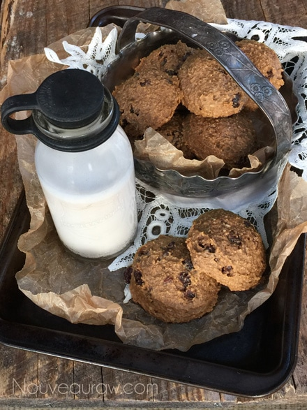
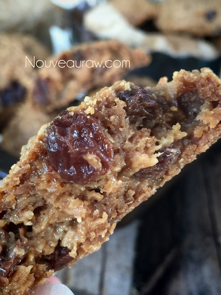

“Brown Sugar” Peanut Butter Oat Cookies

~ raw, vegan, gluten-free ~
Fill your cookie jar with a classic drop cookie that’s doubly satisfying. Peanut butter lovers will groan with pleasure, and whole-grain seekers will appreciate the natural oats.
Just about all raw cookies require some time in the dehydrator, which often wears on a person’s patience. Brace yourself, because I “baked” these for 24 hours! Come back!!! I promise they are worth it.
With traditional cookies, you whip up the batter, drop the cookies on a baking sheet and bake for 10-15 minutes. That gives you MAYBE just enough time to run to the restroom and change the toilet paper roll.
With these cookies, you will have so much more time on your hands to get other things done. It will enhance your multitasking skills. Just think about it… slide the cookies into the dehydrator and let the day begin.
Dishes? Done. Daily exercise routine of chasing dust bunnies around the house? Done. Mid-afternoon nap? Done. Breakfast, lunch, and dinner? Done, done, done. Play hide and seek with your children, walk the dog, get the grocery shopping done, and think… you won’t have the stress of burning your cookies because of your A.D.D. kicking in! Stand on your head? DONE! I mean really, look at what you can get accomplished in the time it takes to make a batch of raw cookies?!!!
I have to laugh because this will either cause you to nod in agreement and have a good chuckle with me…. or it will cause you to walk away from the computer and pull a box of cookies out of the pantry, eating them while claiming that I am plain crazy. If nothing else, I cracked myself up and we all need more laughter in our lives.
All silliness put aside, let me share some things about these cookies. To me, they are perfect because they are firm (not crunchy) on the outside and chewy on the inside. The perfect qualifications for a cookie… if you ask me. And I must mention that they stack nicely in a cookie jar without sticking to one another… most raw cookies need to be stored in single-layered rows. Flavor-wise, I think the ingredients tell the story… peanut butter, oatmeal, and raisins. Delish. Blessings, amie sue
yields 12 cookies
- 4 cups gluten-free oats, soaked
- 3/4 cup fresh ground peanut butter
- 1/2 cup raw coconut crystals
- 1/2 tsp Himalayan pink salt
- 1/2 cup raisins
Preparation:
- After soaking the oats, pour them into a fine-mesh strainer and rinse the living daylights out of them.
- The water will turn from a milky color to a more translucent color.
- Press the excess water from them and place them in the food processor bowl, fitted with the “S” blade.
- Add the peanut butter, coconut crystals, and salt. Process until it turns into a thick, sticky batter.
- Add the raisins and hand stir together.
- Using a 1/4 cup cookie scoop, level off each scoop of dough and release it on the teflex sheet that comes with the dehydrator.
- Do not press the cookie dough down, leave just as it comes out of the cookie scoop.
- This will give the cookie some chewy volume.
- And if you can’t resist, flatten them. I won’t look.
- Dehydrate at 145 degrees (F) for 1 hour, then reduce to 115 degrees (F) for 8 hours.
- After 8 hours, remove the cookies from the teflex sheet, and transfer them straight to the mesh sheet that is on the dehydrator tray.
- Continue drying for about 16 hours. I dried mine for a full 24 hours and the texture came out perfect. The outside of the cookie had a firm shell and the inside was chewy.
- Allow the cookies to cool before storing.
- Store in an airtight container on the counter for 1 week, in the fridge for 2-4 weeks and up to 3 months in the freezer.

Substitutions:
- Peanut butter – you can replace it with any nut or seed butter.
- Raw coconut crystals – the dry “sugar” works best with this recipe so I really don’t recommend using a liquid sweetener. You can always try lucuma powder and then add stevia to bump up the sweetness but this unchartered territory.
- Oats – if you can’t eat oats, this recipe just might not be for you. You can always try replacing them with ground nuts but then that would be a whole new recipe.
- Raisins – use any dried fruit that you have on hand or are craving. Just make sure to dice it up into bite-sized pieces.
Further information on oats:
- Are oats raw? Click (here).
- Are oats gluten-free? Click (here).
- Why do I need to soak oats? Click (here).
Culinary Explanations:
- Why do I start the dehydrator at 145 degrees (F)? Click (here) to learn the reason behind this.
- When working with fresh ingredients it is important to taste test as you build a recipe. Learn why (here).
- Don’t own a dehydrator? Learn how to use your oven (here). I do however truly believe that it is a worthwhile investment. Click (here) to learn what I use.
© AmieSue.com